tOps
远程运维 tems 服务器的工具。
在一个界面监控多个现场，无需前往现场即可完成重启 · 配置检查与变更 · 部署。现在还支持手机(Android)和离线作业。

运维人员每天的工作，一个程序搞定
仪表盘 · 监控
将组内所有节点的状态汇集到一个界面，优先显示需要注意的项目。点击项目即可直接进入该节点的相应界面进行处理。
- 站点健康评分、各节点状态卡片、tems 进程·设备通信摘要
- 事件 24 小时热度条与最近事件(按类型着色)
- 卡片拖动·放大查看，监控室模式(全屏·大字体)
- 节点 100 台以上 - 自动切换为紧凑视图、资源前 N 名、10 列放大窗口
- 按服务器设置颜色主题，避免混淆现场，连接中断单独显示
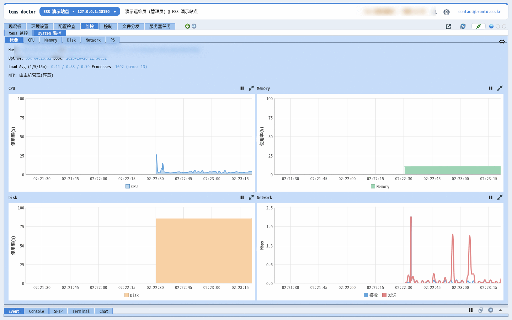
tems 环境检查 NEW
一次性检查 tems 配置，从 temsconfig.xml 到所有关联文件(XML·.conf)。将结果分为会导致 tems 丢弃配置或启动·控制失败的问题(错误)、可以运行但可能与预期不同的情况(警告)以及参考(信息)。
- 进程列表 → 环境文件 → 关联文件 → 数据映射 → 设备 → 从站映射，共 6 个阶段
- 按规则编号·文件·行显示结果，双击即可在编辑器中打开该行
- 连文件之间的关系也检查，如设备 slave_id、数据映射位溢出、tpool 链接目标等
- 保存为报告，留作现场检查记录
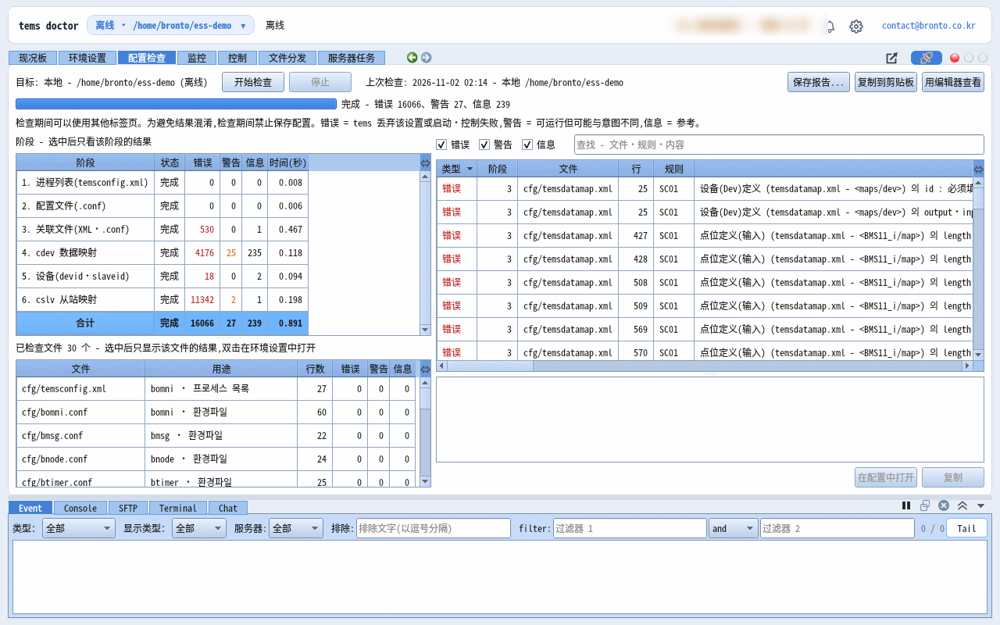
带校验的配置编辑
无需以文本方式直接修改 tems 配置文件，而是在附有各项说明和允许范围的界面中编辑。即使是数据映射、从站映射这样数千行的 XML，也能在约 1 秒内以表格打开，并按设备分开查看。
- 按进程配置 · 以表格编辑 XML 记录，直接编辑原文(行号)
- 校验值的格式·范围，保存前用与环境检查相同的规则检查文件
- 双击错误行即可跳转到该行
- 从文本窗口用外部编辑器打开，在编辑器中保存后立即生效
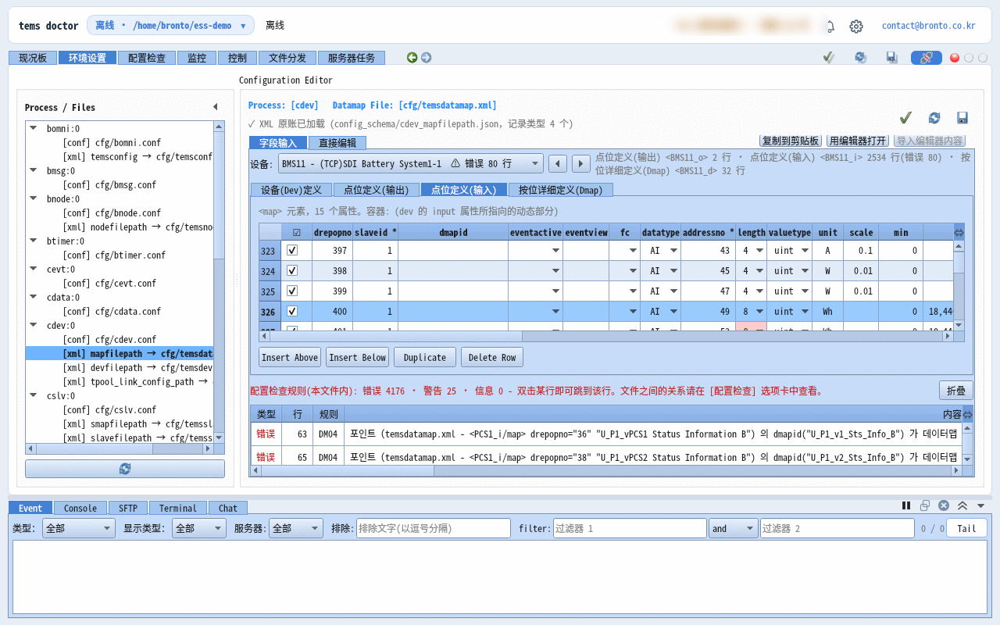
离线模式 NEW
无需连接服务器(brontod)，直接打开 PC 上的 tems 配置文件夹进行编辑和检查。适用于出发去现场前在办公室准备配置，或在无法上网的地方作业。
- 通过连接窗口的 [离线打开…] 或启动参数指定本地工作文件夹
- 环境配置·环境检查使用与在线时相同的界面
- 之后连接服务器，通过文件部署同步到服务器
- 从菜单选择之前打开过的本地文件夹即可立即切换
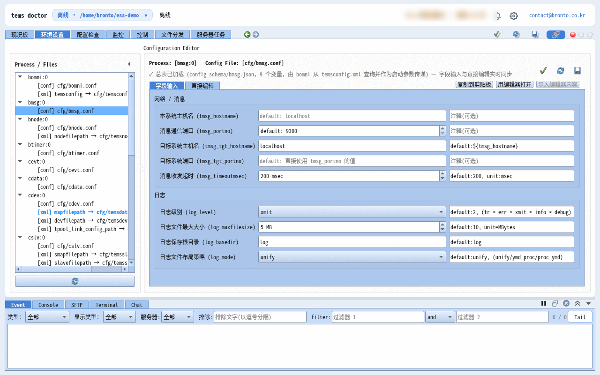
进程控制
实时查看 tems 各进程的状态，并远程执行启动 · 停止 · 重启。
- 各进程运行状态 · Copy No · 资源占用
- 远程执行启动 · 停止 · 重启
- 通过控制权限申请·批准防止同时操作
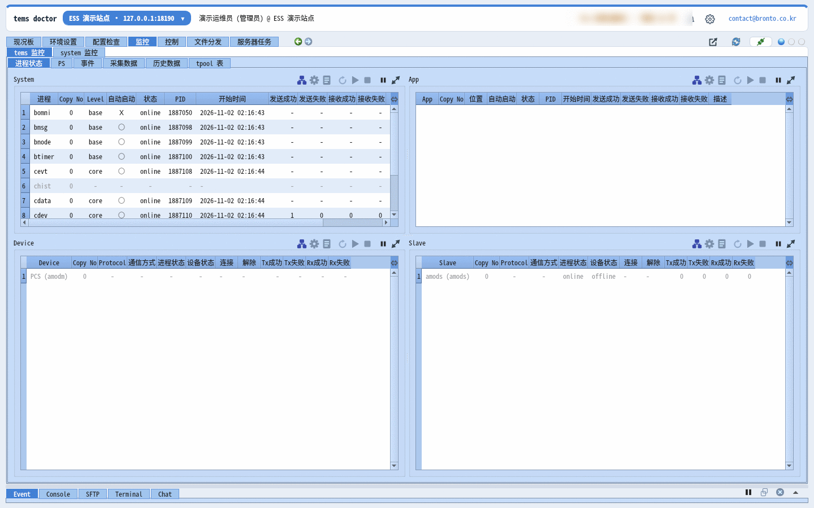
文件部署 · 备份 · 回滚
将新版本文件一次部署到多台服务器，并自动保存部署前的状态。出现问题时恢复到之前的状态。
- 多服务器批量部署，按节点显示整体进度
- 部署前自动备份 · 回滚 · 部署后重启
- 存储容量上限管理
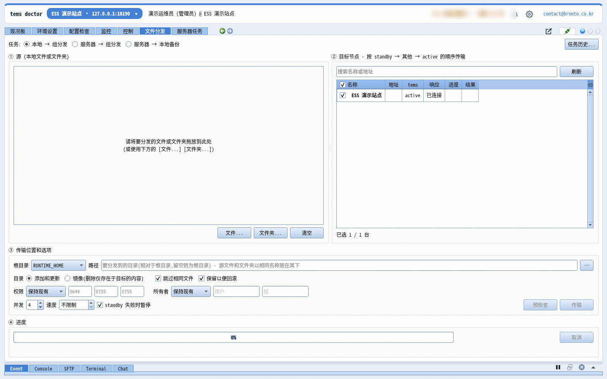
服务器任务 · 远程安装·升级
将常用的检查命令注册为任务，选择服务器执行后立即查看结果。可远程在新服务器上安装 brontod 并加入组，或一次升级多台服务器。
- 内置任务：tems·brontod 安装 · 环境 · 运维套件
- 其他服务器(SSH)任务 - 多个目标及各目标的 SSH·sudo 密码
- brontod 升级：预先只发送变更的文件，同时替换并立即重启
- 嵌入式设备(dropbear·busybox)也支持远程安装·加入检查
- SFTP·终端：主机密钥变化时显示新旧指纹，确认后再连接；对禁止密码登录的服务器，说明原因和解决方法
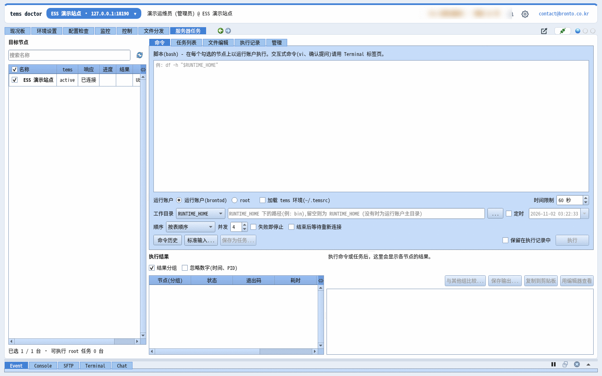
账户 · 组 · 团队聊天
为每位运维团队成员设立账户，按组划分服务器访问权限。查看同一服务器的成员之间可以直接交流。
- 用 ID 或邮箱登录，按账户 · 组设置访问权限
- 组枢纽连接 - 由一个枢纽中继状态·事件，大规模组也能轻量运行
- 批准加入申请 · 重启·停止多个节点的 brontod · 移动到其他组
- 危险命令在服务器(brontod)上再次验证，通过组聊天共享处理情况
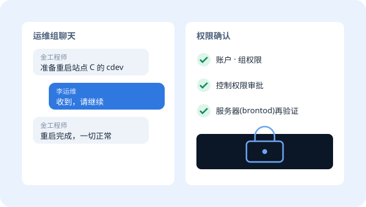
搭配 tVault - 部署·许可证 NEW
tdoctor 和 brontod 通过 tVault 安装和更新。客户服务器上的 brontod 只在客户负责人批准的设备上、于指定时间更新。tdoctor 通过 tVault 许可证区分 Basic · Pro。
- 一个安装程序完成 tdoctor 安装 · 开始菜单 · 通知区域图标
- 更新通知：立即 · 稍后 · 跳过，查看更新内容
- Pro：多节点文件部署·服务器任务 / Basic：一次一个节点
- 许可证文件签名·PC 验证，复制品按 Pro 试用 10 天运行
- 在网站申请 14 天 Pro 试用 - 申请后安装程序会通过邮件发送

手机上也能用 - tdoctor Android 应用
在 PC 版 tdoctor 上做的大部分工作都可以在手机上完成：仪表盘·系统图表·组状态板、进程启动·停止、服务器任务与命令执行、服务器文件查看·下载·上传、tems 数据(tpool·历史·采集)、部署新文件、环境检查与配置原文编辑、创建聊天室·邀请成员，乃至审计日志。tems 故障·告警和聊天消息即使关闭应用 · 屏幕熄灭 · 重启之后也会以手机通知送达。
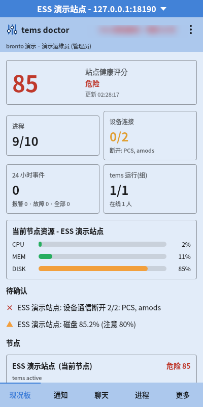
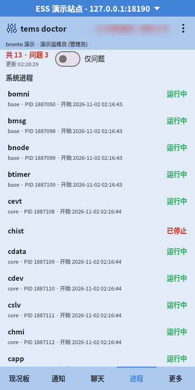
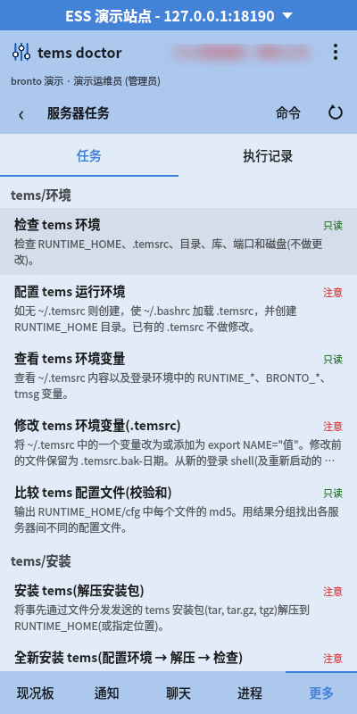
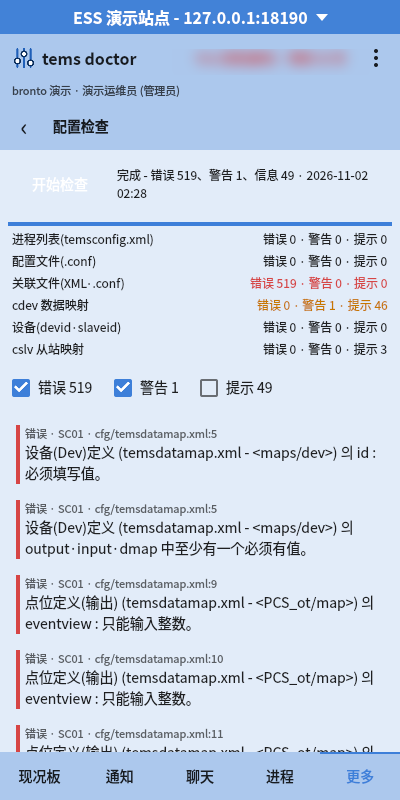
PC · tdoctor
在 Windows · Linux 运维人员 PC 上使用全部功能。韩语·英语·日语·中文界面，并附带各语言的等宽字体。
服务器 · brontod
安装在运行 tems 的 x64 · ARM64 Linux 服务器和嵌入式控制器上。每秒采集系统资源并保留 60 分钟。
移动端 · Android
韩语·英语·日语·中文界面，与 PC 相同的服务器主题·标识。密码使用 Android Keystore 加密保存并自动登录。许可证由应用直接向 tVault 注册获取，每个账户可使用 1 台 PC + 1 部手机。
单独使用，或与 tems 搭配
仅 tOps
- 已在运行 tems 服务器时
- 希望将多个现场的运维工作集中到一处时
- 希望无需到现场即可处理故障时
亲自体验 tOps
免费试用 tdoctor 14 天，畅享 Pro 全部功能。如需测试服务器或界面演示，请联系我们。